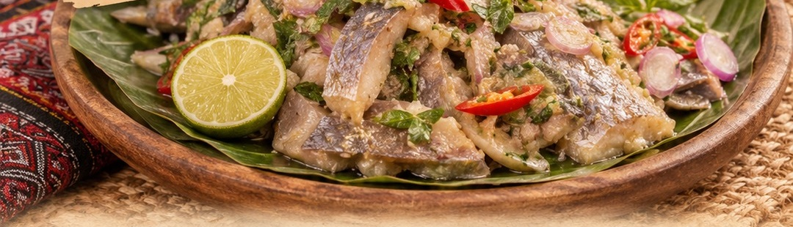
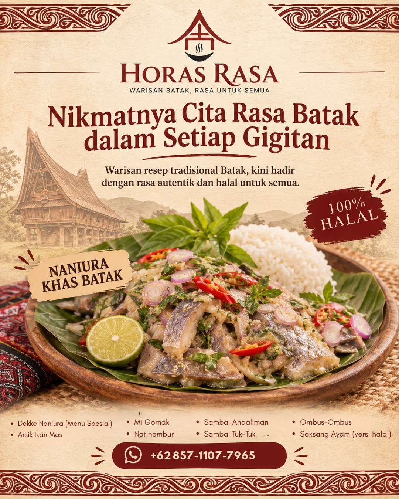

Kuliner khas Batak · Indonesia
Warisan Batak,
Rasa untuk Semua.
Nikmati cita rasa khas Batak yang membawa kehangatan rumah, kekayaan rempah, dan cerita budaya dalam setiap gigitan.
Autentik • Hangat • Inklusif
Menu spesial — Dekke Naniura✦ Warisan budaya✦ Cita rasa autentik✦ Untuk semua

Cerita kami
Dari tanah Batak,
untuk setiap meja.
Horas adalah sapaan penuh kehangatan. Rasa adalah cara kami memperkenalkan kekayaan kuliner Batak kepada keluarga, perantau, dan pencinta makanan tradisional dari berbagai latar belakang.
Kami mengusung konsep pilihan kuliner Batak halal yang inklusif, dengan penghargaan terhadap resep tradisional dan budaya asalnya.
Informasi sertifikasi halal belum tersedia. Tanyakan bahan dan proses pengolahan sebelum memesan.
Temukan menu favoritHORAS!
Rindu cita rasa kampung halaman?
Mari hadirkan kehangatan kuliner Batak di meja Anda.